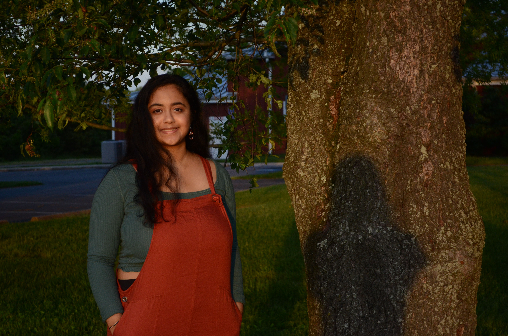

Hi, I'm Kirthi!
I'm currently a student at UC Berkeley studying EECS + Business in the Management, Entrepreneurship, and Technology (M.E.T.) Program.
In my free time, I love to make pasta, read about politics, and meet new people.
Technical Portfolio/Experiences...
Participated in Jane Street Women in STEM 2020 where I learned about the ever-changing world of quant trading.
Took part in the Aspiring Scientists Summer Internship Program. Worked on SIR-based mathematical modeling on the opioid crisis. Also, co-mentored a few students on projects regarding malaria and COVID-19.
Worked on a CubeSat project funded by NASA doing stuff with orbital simulations in MATLAB and Python, as well as solar hardware.
Experimented in my senior robotics lab with swarm robotics for disaster recovery.
Was Team Captain of my Botball Robotics team where we built some cool robots!
Built and coded awesome drone technology with machine learning intended for aerial train track inspection.
Worked on some interesting data analytics with a local EdTech startup. Also, worked on an AWS-related project with a local cloud startup, too.